インターネットへの公開
このページでは、作ったWebサイトを全世界の人が見れるようにするために、Webサイトをデプロイする工程について説明していきたいと思います。デプロイとは簡単に説明するとWebサイトを構成するHTMLファイルなどをサーバーにアップロードしそのサーバにインターネットからアクセスできるようにすることです。せっかく作ったWebサイトも誰にも見られないのであれば作った意味がありません。なのでデプロイは非常に重要な作業です。少し難しいですが、しなければならない事は決まっているので頑張って学んでいきましょう。
Amazon Simple Storage Service (S3)
AWS、S3とは
AWSとはAmazon Web Servicesの略で、Amazonが提供している100以上のクラウドコンピューティングサービスの総称です。 クラウドコンピューティングとは、インターネットを介してサーバー・ストレージ・データベース・ソフトウェアといったコンピューターを使った様々なサービスを利用することを指します。 クラウドコンピューティングでは、手元に1台のPCとインターネットに接続できる環境さえあれば、サーバーや大容量のストレージ、高速なデータベースなどを必要な分だけ利用できるわけです。 その中のサービスで今回はS3というものを使っていきます。S3はデータを「オブジェクト」単位で「バケット」に保存するストレージサービスで S3をWebサーバとしてみなし、HTML・CSS・Javascriptなどをアップロードし、静的Webサイトを構築する時などに使います。
AWSアカウントの作成
AWSのサービスを使うにはAWSのアカウントを作る必要があります。
AWSアカウントの作成
ステップ 1: AWS アカウントの作成
- awsのサインアップページに移動
- 表示されたページが「日本語」でない場合、ページ右上の言語選択ボックスより「日本語」を選択後、サインアップ画面へ進んでください。
- 「E メールアドレス」には、AWS へのログイン時に使用するメールアドレスを設定します。
- パスワード」および「パスワードの確認」で AWS へのログイン時に使用するパスワードを設定し、確認用にもう一度同じパスワードを入力します。
- AWS アカウント名」に、名前を半角アルファベットで入力します。入力が完了したら、「続行」ボタンをクリックします。
ステップ 2: 連絡先情報の入力
- 個人の使用であれば「個人 - ご自身のプロジェクト向け」を選択します。
- 連絡先情報は、すべて「半角アルファベットおよび半角数字」 で入力します。
- 電話番号： 電話番号をハイフン・記号なしで入力します。
(例 : 0312345678) - 住所： 住所の番地、建物名等を入力します。
(例 : 1-1-1, Kamiosaki ABC Building) - 市区町村： 住所の市区町村名を入力します。
(例 : Shinagawa-ku) - 州/都道府県または地域： 住所の都道府県名を入力します。
(例 : Tokyo) - 郵便番号： 住所の郵便番号をハイフン付きで入力します。
(例 : 141-0021) - AWS カスタマーアグリーメント (利用規約) に同意の上、③ のチェックボックスをクリックし、「続行」ボタンをクリックします。
ステップ 3: 請求情報の入力
- AWS 無料利用枠内の利用に対し、料金は発生しません。
- 有効なクレジットカードまたはデビットカード情報を入力します。カード番号、有効期限などの情報に間違いのないよう気をつけください。
- 請求先住所を選択します。前のステップで入力した住所と同様の場合は、「連絡先住所を使用する」を選択します。アカウント作成時に入力した住所と異なる請求先となる場合は、「新しい住所を使用する」を選択して、請求先住所を入力します。
- 入力が完了したら、「確認して次へ」ボタンをクリックします。
ステップ 4: SMS または音声電話による本人確認
- ① で検証コードの受け取り方法を選択します。
- 国コードで、国を選択し、電話番号を ②にハイフン・記号なしで入力します。（例：09012345678）
- ③で、セキュリティチェック文字列として表示された英数字を入力します。
- 入力が完了したら、SNS の場合「SNS を送信する」、音声通話の場合「今すぐ呼び出し」ボタンをクリックします。
- SMS または電話（日本語自動音声）で 4 桁の検証コードが届きます。検証コードが届いたら入力欄に検証コードを入力し、「続行」ボタンをクリックします。
ステップ 5: AWS サポートプランの選択
- 今回はS3を使うだけなので「ベーシックサポート」を選択します。
- 選択が完了したら、「サインアップを完了」ボタンをクリックします。
以上でAWSアカウントの作成は終わりです。それでは早速S3を用いてファイルをアップロードしていきましょう。
S3を用いてデプロイする。
ヘッダーの「サービス」から「ストレージ」カテゴリーに「S3」が表示されているので、選択します。
※検索窓で「S3」と検索しても表示されます。
S3のコンソール画面には既に作成したバケットがある場合、一覧形式で表示されます。バケットとはこれからアップロードするHTMLファイルなどを保存していく場所(バケツ)のことです。新規でバケットを追加したい場合、「バケットを作成」ボタンをクリックします。
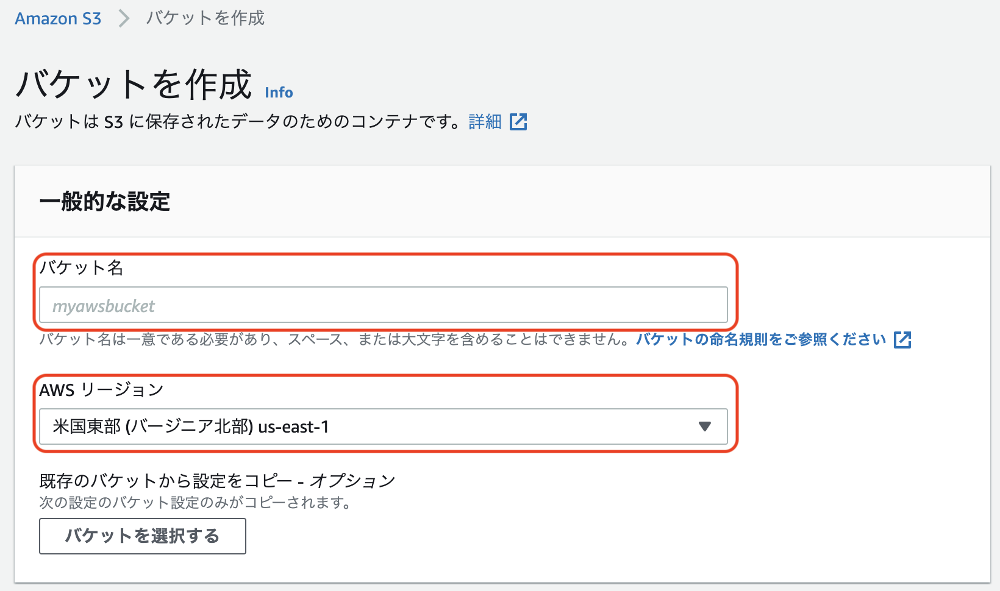バケット名やリージョンを選択して、バケットを作成するわけですが、上述したようにバケット名は全ユーザーの保持するバケットで一意である必要があります。リージョンは、データを保管しておくサーバの場所のことです。
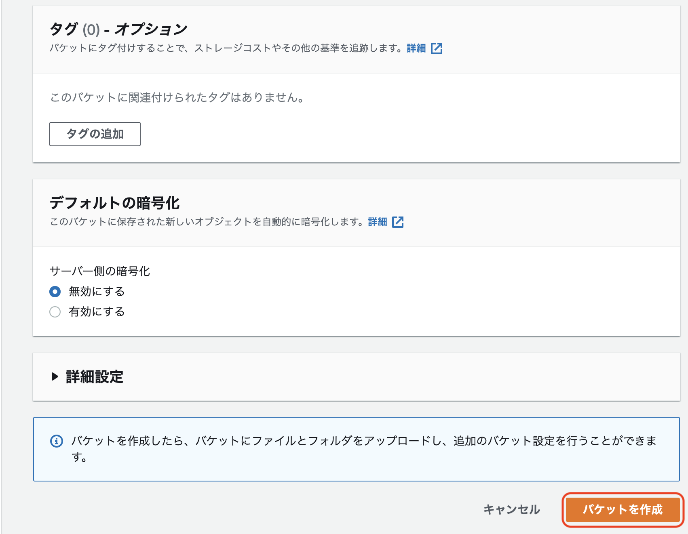その他様々なオプション項目が設定可能ですが、今回はサンプルなのでデフォルトのまま画面下部の「バケットを作成」ボタンをクリックします。
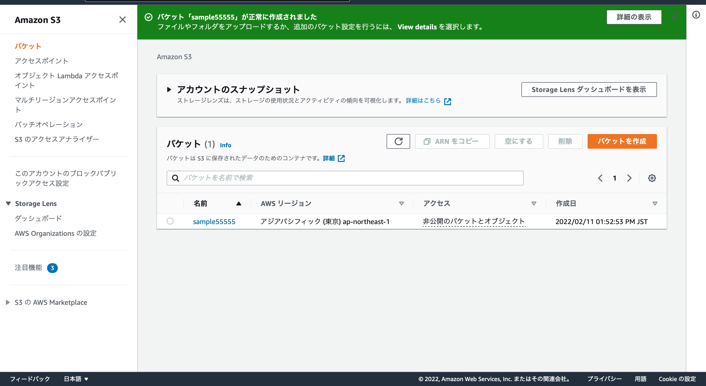サンプルの場合、「sample55555」というバケットを「ap-northeast-1(東京リージョン)」に作成出来たことが分かります。
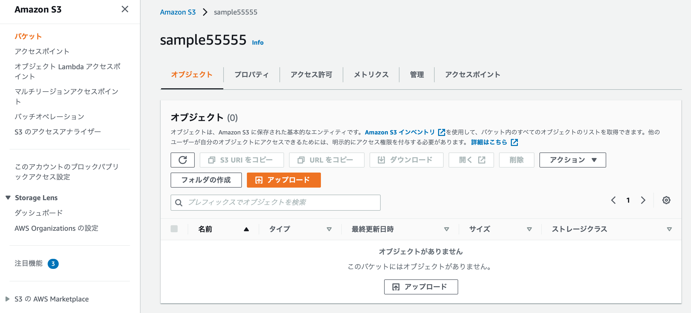作成した「sample55555」をクリックすると、上記の画面が表示されるので「アップロード」ボタンをクリックします。
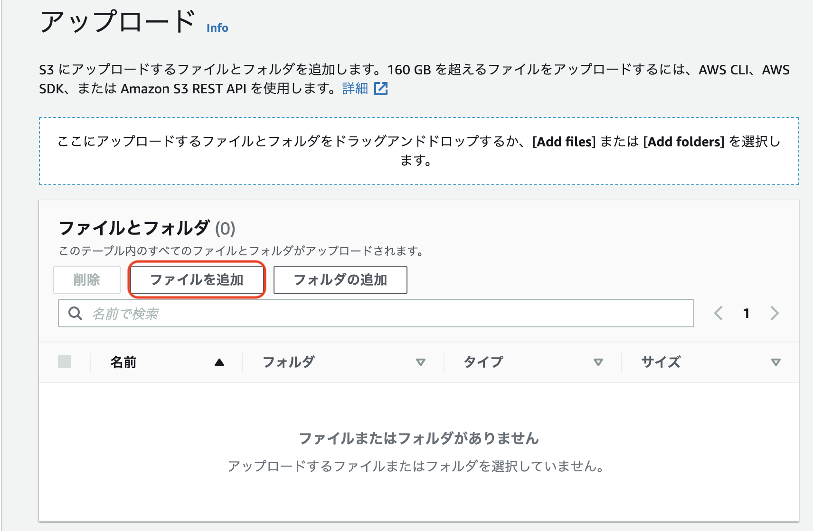「ファイルを追加」ボタンをクリックすると、ダイアログが表示されます。今回は以下のindex.htmlというファイルを選択します。
<!DOCTYPE html>
<html lang="ja">
<head>
<meta charset="UTF-8">
<title>sample</title>
</head>
<body>
<h1>Hello W0rld</h1>
<p>This is sanple page</p>
</body>
</html>
選択できたら右下のアップロードを押してください。これでファイルのアップロードは完成したので次に公開の為の設定を少しだけします。
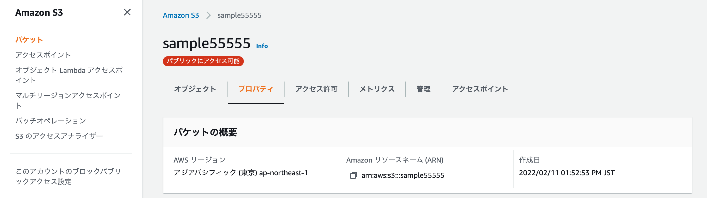次に先ほどのバケットを選択したページに戻り「プロパティ」を選択します。
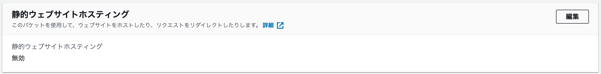そのページの一番下の方にある「静的ウェブサイトホスティング」の編集をクリックします。
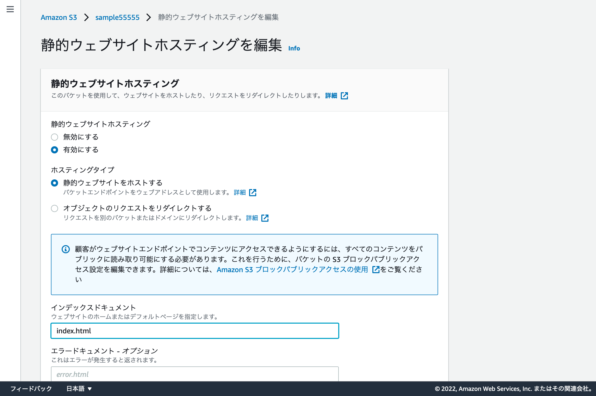この設定することで、S3バケットに置いているHTMLを表示できるようになります。「インデックスドキュメント」について今回はトップページはindex.htmlなのでその名前を入力します。最後に一番下にある「変更の保存」をクリックします。
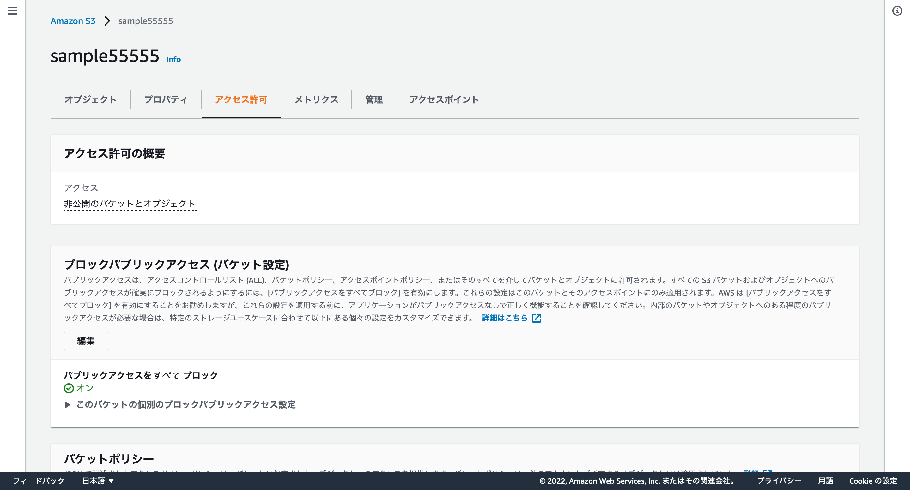次に先ほどのバケットを選択したページに戻り「アクセス許可」を選択します。さらにその中のブロックパブリックアクセス(バケット設定)の編集を選択します。
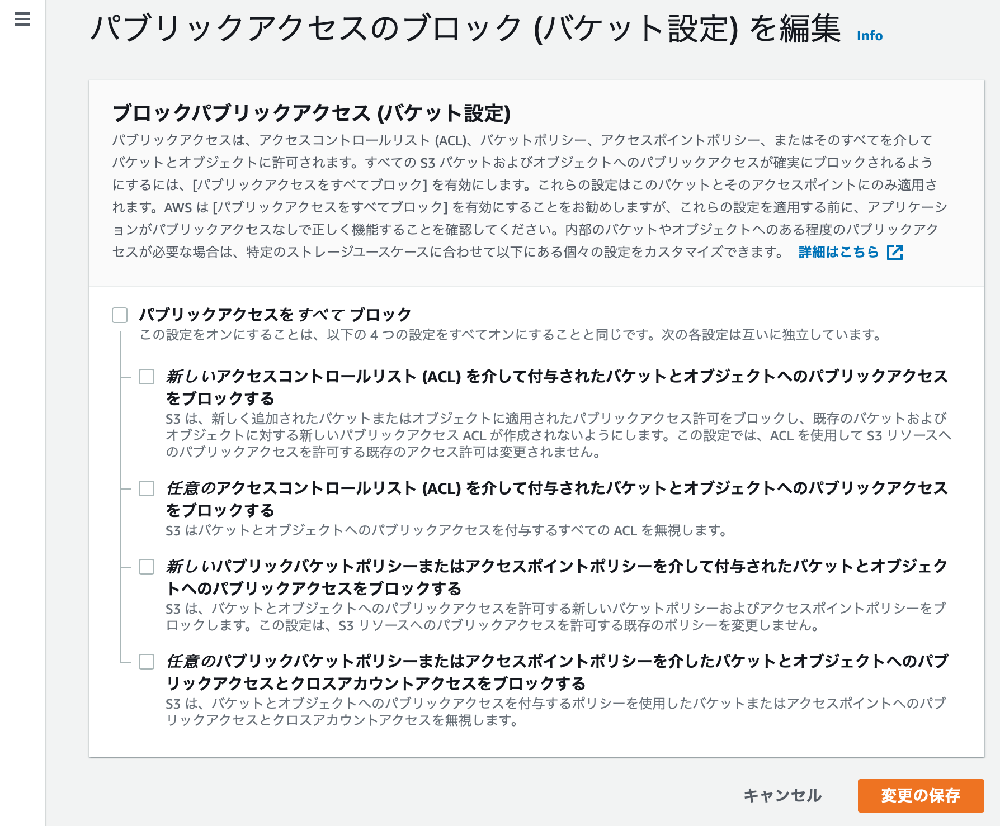全てのブロックを解除し、変更の保存をクリックします。ブロックのアクセスと聞いて少し抵抗があると思いますが、このブロックを解除してもどこからでもアクセスできるわけはありません。簡単にこのブロックアクセスについて言うと、アクセスを許可することの許可という意味です。
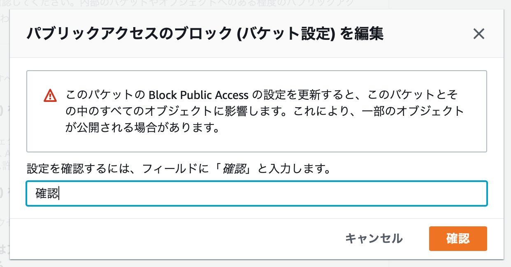警告が出ますが気にせず確認を入力します。
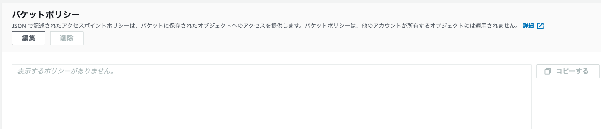次にバケットポリシーの編集を選択します。以下をポリシーに入力してください。
{
"Version": "2012-10-17",
"Statement": [
{
"Sid": "PublicReadGetObject",
"Effect": "Allow",
"Principal": "*",
"Action": "s3:GetObject",
"Resource": "arn:aws:s3:::【ここをバケット名に置換】/*"
}
]
}
このサンプルの場合上のようになります。入力が完了しら「変更の保存」をクリックしましょう。
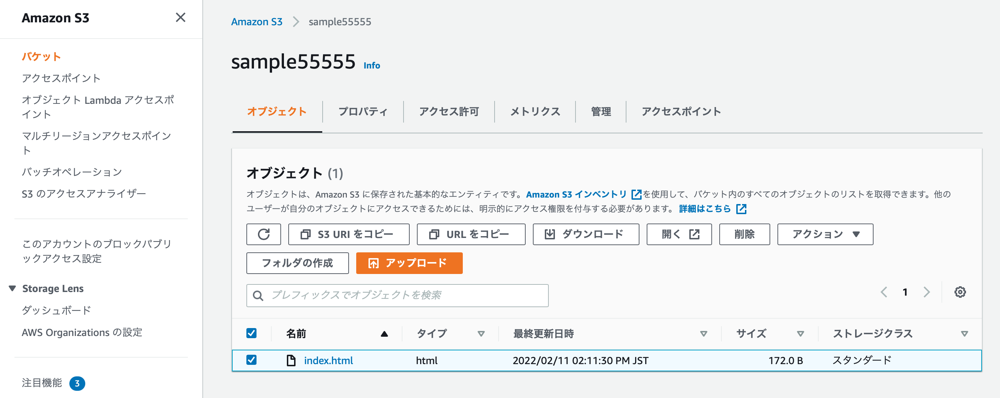これでs3の設定は以上です。ブラウザで確認するために「URLをコピー」を選択してブラウザに表示してみましょう。
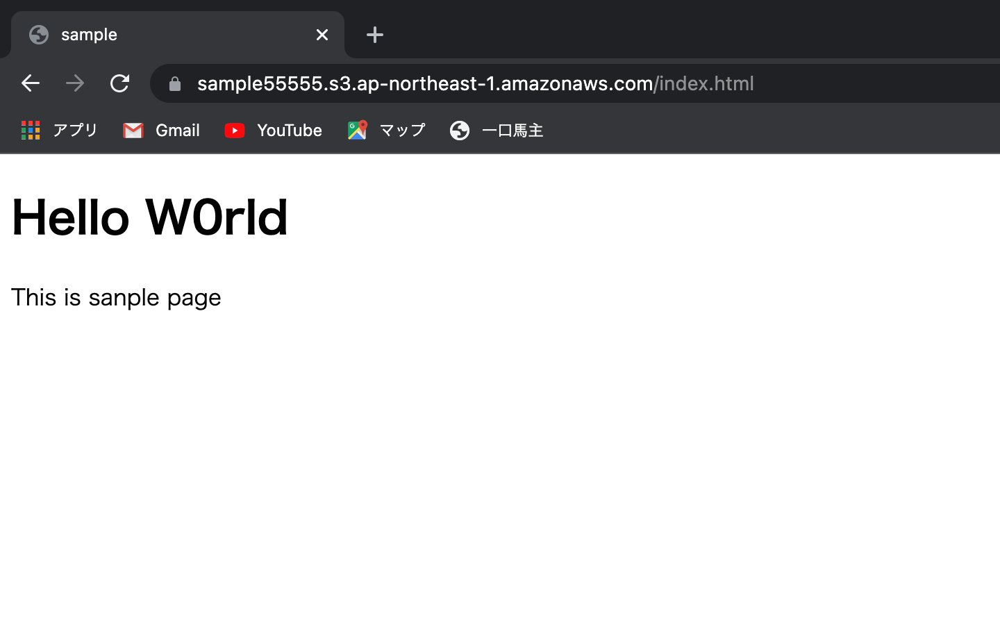うまくブラウザに表示できましたか？以上でインターネットへの公開の仕方は以上です。今回の方法は、単純なHTML,CSS,Javascriptファイルなどのサーバー内での処理を必要としない(静的Webサイト)をデプロイするためのシンプルな方法です。Webアプリケーションのような動的なWebページをデプロイするには、他の方法を使う必要があります。